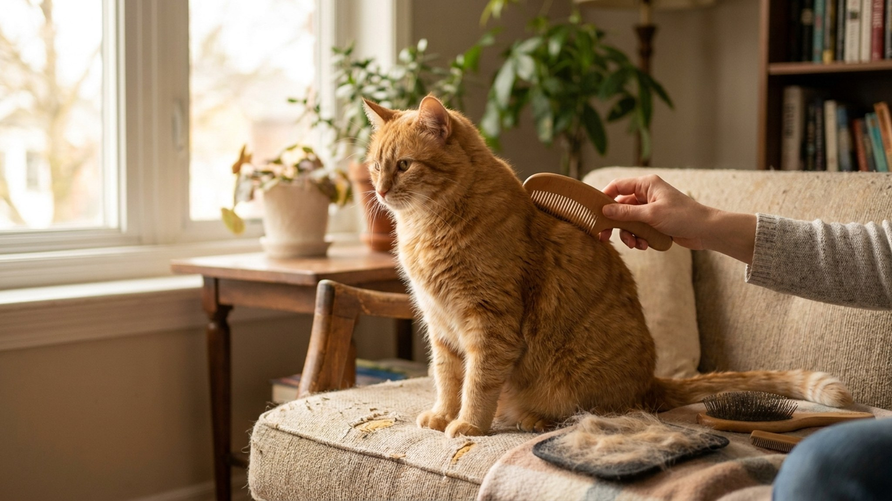

Кошки — мастера самоухода, но это не значит, что они справляются сами. Шерсть, проглоченная при самостоятельном вылизывании, формирует трихобезоары — комки в желудке. Правильное вычёсывание снижает их количество, укрепляет связь с питомцем и сигнализирует о проблемах кожи раньше, чем появятся симптомы.
Три причины вычёсывать кошку регулярно, которые выходят за рамки эстетики:
Трихобезоары. Кошка проводит языком по шерсти, и крошечные крючки-сосочки захватывают отмершие волосы. Большинство проходит транзитом через ЖКТ, часть скапливается в желудке. Результат — периодические рвотные «колбаски» из шерсти. При большом количестве — закупорка, требующая хирургического вмешательства. Регулярное вычёсывание убирает шерсть до того, как кошка её проглотит.
Ранняя диагностика. Во время вычёсывания вы осматриваете кожу: блохи и их экскременты (чёрные крупинки, похожие на перец), перхоть, покраснения, проплешины, уплотнения. Всё это легче заметить руками, чем глазами издалека.
Терморегуляция и комфорт. Свалявшаяся и загрязнённая шерсть хуже удерживает тепло и хуже вентилируется. Кошкам с колтунами жарче летом и холоднее зимой — это физика, а не метафора.
Один «универсальный» инструмент — маркетинговый миф. Разные типы шерсти требуют разных щёток.
Короткошёрстные кошки (британские, американские короткошёрстные, бурманские, абиссинские):
Полудлинношёрстные (мейн-кун, норвежская лесная, сибирская, рэгдолл):
Длинношёрстные (персидская, гималайская, ангорская):
Бесшёрстные и коротко-бархатные (сфинкс, петерболд, девон-рекс):
Общее правило: чем длиннее шерсть, тем чаще нужно вычёсывание.
Критические зоны для любой кошки: за ушами, в подмышках, в паховых складках, у основания хвоста. Именно там колтуны образуются первыми — трение и движение. Начинайте вычёсывание именно с этих зон.
Правильная техника важна так же, как правильный инструмент. Несколько правил:
Короткими движениями по росту шерсти. Не от хвоста к голове — так вы рвёте волос и создаёте боль. Всегда по росту, короткими мазками, не давя.
Начинайте с зон, которые кошка любит. Обычно это холка, основание ушей, щёки. Потом переходите к менее любимым областям — живот, задние лапы. Так сессия начинается приятно и кошка более расположена терпеть неудобные зоны.
Не фиксируйте силой. Кошка, которую держат насильно, запомнит это как стресс и в следующий раз будет сопротивляться активнее. Пусть уходит — позовите снова через 10 минут. Постепенно сессия будет удлиняться.
Угощение как инструмент. Лизалка или паста на ложке во время вычёсывания — это не баловство, это классическое контробусловливание. Кошка ассоциирует расчёску с чем-то вкусным.
Следите за сигналами стресса. Хвост начал резко бить по бокам, уши прижались, кожа на спине задёргалась — сессия закончена. Продолжать через стресс — значит закреплять негативную ассоциацию.
Колтун — это свалявшаяся масса шерсти, которая стягивает кожу и причиняет боль при движении. Крупные колтуны снижают кровоснабжение участков кожи под ними.
Мелкие колтуны (размером с горошину). Держите основание колтуна пальцами — это фиксирует кожу и снижает боль. Расчёской или специальным распутывателем работайте от края колтуна к его центру, а не насквозь. Маленькими движениями разрыхляйте волосок за волоском.
Средние колтуны (размером с фасолину). Разрежьте вдоль (параллельно коже, не перпендикулярно!) ножницами с закруглёнными концами на несколько частей — и расчёсывайте каждую часть отдельно. Никогда не режьте поперёк — так легко порезать кожу, которую вы не видите под шерстью.
Крупные и плотные колтуны. Не пытайтесь расчесать самостоятельно. К грумеру. Профессионал использует специальный нож-распутыватель или машинку под кожей колтуна. Самостоятельная работа с крупными колтунами часто заканчивается порезами кожи или укусами кошки от боли.
Чего не делать с колтунами:
Домашний груминг покрывает большинство потребностей, но есть ситуации, где без специалиста не обойтись:
«Кошки сами себя чистят, зачем вычёсывать». Самоуход снижает количество проглатываемой шерсти, но не устраняет колтуны, не убирает отмерший подшёрсток и не позволяет осмотреть кожу.
«Чем короче шерсть, тем меньше проблем». Короткошёрстные кошки линяют так же активно (иногда активнее), просто их шерсть не создаёт колтунов. Вычёсывание всё равно нужно.
«Мочить шерсть перед расчёсыванием легче». Ошибка. Мокрая шерсть свалявается быстрее. Расчёсывайте только сухую шерсть. Если нужно помыть кошку — сначала расчешите, потом мойте, потом снова расчешите после сушки.
«Фурминатор снимет всю шерсть». Фурминаторы эффективны при линьке, но при частом применении на не линяющей кошке — снимают ость (верхний слой шерсти), что вредно. Использовать только в период активной линьки.
Взрослая кошка, которая никогда не вычёсывалась — сложный, но решаемый случай. Несколько принципов:
Начните с прикосновений, а не с инструментов. Прежде чем показывать кошке щётку, потратьте неделю на то, чтобы она привыкла к интенсивным поглаживаниям по телу — в том числе по животу и задним лапам. Инструмент — это тот же контакт, только с предметом.
Десенситизация к инструменту. Оставьте щётку или гребень рядом с едой и спальным местом кошки на несколько дней. Она нюхает, трётся — всё нормально. Потом покажите, что инструмент прикасается к шерсти — без движения, просто лежит. Потом один мазок по холке. Одно движение в день, постепенно наращивая.
Сессии по 30 секунд. Не пытайтесь вычесать всё сразу. Для кошки, не привыкшей к грумингу, 30-60 секунд без стресса лучше, чем 5 минут с борьбой. Постепенно сессии удлиняются.
Никогда не продолжайте после сигнала стресса. Остановились — дали угощение — отпустили. Это не проигрыш. Это правильный протокол, который строит доверие.
Большинство кошек не требуют регулярного купания — они справляются сами. Исключения:
Для мытья используйте только шампуни для кошек — pH кожи кошки отличается от человеческого. Детский шампунь — допустим как временная замена, хозяйственное мыло, шампуни для людей — нет. Температура воды: чуть теплее руки, около 38°С. Не направляйте воду в уши и нос. После мытья — тщательная сушка феном на минимальной температуре или полотенцем в тёплом помещении. Влажная кошка переохлаждается быстрее, чем кажется.
Регулярный домашний груминг — это не просто уход, это систематический осмотр. Хозяева, вычёсывающие кошку раз в неделю, замечают изменения значительно раньше тех, кто не делает этого вовсе. Что стоит отмечать:
Фиксируйте находки. Если на осмотре у ветеринара вы сможете сказать «три недели назад появилась вот эта точка, вот её фото» — это сильно упрощает диагностику.